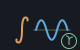

A reckoner seed: eng's trigonometry, complex numbers, statistics, number theory, polynomials, units and constants — machines/seeds/seedeng.shoddy

seedeng bridges eng's trigonometry,
hyperbolics, complex numbers, descriptive statistics and distributions,
number theory and combinatorics, polynomial arithmetic, sequences, unit
conversion and physical constants. Per R4.16 there is no COMPLEX or RECORD
cell at the keyboard: EngComplex(re, im) is a PAIR
( re im ), EngPolar is a PAIR
( mag theta ), and EngDms, EngStat,
EngFit, EngDivided, EngUnit and
EngConst are each a dict, the same LIST-of-PAIR shape
seeddict already established, one entry per
field.
Every guard here matches one eng.shoddy itself states or needs.
ENGASEC/ENGACSC/ENGACOSH/ENGATANH/ENGASECH/ENGACOTH/ENGNTHROOT
pre-flight the exact condition each already Errors on;
ENGSEC/ENGCSC/ENGCOT/ENGCSCH/ENGCOTH
have no guard of their own in eng.shoddy — each is a plain division by a
trig or hyperbolic function that can be zero — so this seed adds the one
they are missing.
eng's derivative, integrator, range sum and product, and its two
bracketed searches each want a [ Number -- Number ] — a
function value, not a stack cell. What a session can put on the stack is a
program: [ DUP * ]. Two things in
reckoner close that gap, and both were built for
this and are general rather than eng's: RckProgFn, which turns a
program cell into a function of one number, and RckPureOver, a
body kind that hands a registered word the state its program has to be run
against.
That state matters more than it sounds. A program is run against the
whole session — so [ SQ ] 3 ENGDERIV works with
SQ defined a line earlier, and a program may RCL a
register, which is the documented way a program reaches a value that is not
its element. What the program changes is discarded: a solver calling
it two hundred times must not leave two hundred dictionaries behind.
RckProgFn is total and has to be, because a
[ Number -- Number ] has nowhere to put a refusal: where the
program will not evaluate, it answers 0. That is a wrong
number, which is the one thing a seed exists to prevent — so no word here
hands the machine a program it has not first run, at the points the machine
is going to use.
ENGDERIV, ENGDERIV2,
ENGINTEGRATE, ENGSUMOF and ENGPRODOF
sample at exactly the points their formula evaluates — a central
difference's two, a second difference's three, a Simpson rule's nodes, a
range's integers. For these five the check is complete and no 0 can reach
the answer.ENGZEROOF, ENGMINOF and ENGMAXOF
choose their points as they go, but bisection and golden section both stay
strictly inside the bracket they were given, so the seed samples that bracket
evenly, endpoints included. A program defined across the bracket is safe; a
program with a hole between two samples can still contribute a 0 at that
hole, and no finite sample of a real interval can promise otherwise. Saying
so is the alternative to pretending.The cost is that a checked point is evaluated twice, once to ask and once to answer. At a calculator's scale that is the right trade against a silent zero.
Not bridged: ENGNEWTONOF, and only that
one. Newton's method here aborts outright when the derivative goes to zero
under it, and that is not a condition anything can pre-flight — it depends
on the iterate the search reaches, which depends on every step before it.
R3.5(a) does not allow a bridged word that can abort the session, so it is
left out rather than wrapped and hoped for. eng says the same thing in its
own words: Newton there is "unbracketed and therefore unguarded", and
ENGZEROOF is the safer word. ENGZEROOF is
bridged.
| Group | Words |
|---|---|
| Angles | ENGRAD ENGDEG ENGGRADOF ENGFROMGRAD ENGDMSOF ENGFROMDMS |
| Trig extras | ENGSEC ENGCSC ENGCOT ENGASEC ENGACSC ENGACOT |
| Geometry | ENGANGLEOF ENGHYPOT ENGDISTOF ENGRECTX ENGRECTY ENGPOLAROF |
| Hyperbolics | ENGSINH ENGCOSH ENGSECH ENGCSCH ENGCOTH ENGASINH ENGACOSH ENGATANH ENGASECH ENGACSCH ENGACOTH |
| Logs, roots | ENGLOGBASE ENGLOG2 ENGLOG1P ENGEXPM1 ENGNTHROOT |
| Complex numbers | ENGCADD ENGCSUB ENGCMUL ENGCDIV ENGCONJ ENGCABS ENGCARG ENGCFROMPOLAR ENGCTOPOLAR ENGCEXP ENGCLOG ENGCSQRT ENGCPOW ENGCNEAR ENGCSHOW |
| Descriptive statistics | ENGSUM ENGSMEAN ENGSTDDEV ENGSTDDEVP ENGSVAR ENGVARP ENGSMEDIAN ENGSQUANTILE ENGSMIN ENGSMAX ENGSRANGE ENGSKEWNESS ENGKURTOSIS ENGWEIGHTEDMEAN ENGGEOMEAN ENGCORREL ENGCOV ENGSPEARMAN ENGSTAT1 |
| Distributions | ENGNORMPDF ENGNORMCDF ENGNORMINV ENGTCDF ENGTINV ENGCHI2CDF ENGFCDF ENGBINOMPDF ENGBINOMCDF ENGPOISSONPDF ENGPOISSONCDF ENGGEOMPDF ENGGEOMCDF ENGHYPERPDF ENGEXPCDF |
| Number theory | ENGGCD ENGLCM ENGIQUOT ENGIREM ENGMODPOW ENGMODINV ENGISPRIME ENGPRIMES ENGFACTORIZE ENGDIVISORS ENGTOTIENT ENGFACT ENGCOMB ENGPERM ENGFIB |
| Gamma, beta | ENGGAMMA ENGBETA |
| Polynomial arithmetic | ENGPOLYEVAL ENGPOLYTRIM ENGPOLYDEGREE ENGPOLYADD ENGPOLYNEG ENGPOLYSUB ENGPOLYSCALE ENGPOLYMUL ENGPOLYDIV ENGPOLYDERIV ENGPOLYINTEGRAL ENGPOLYAREA ENGQUADROOTS ENGCUBICREAL |
| Sequences | ENGLINSPACE ENGGEOMSPACE ENGCUMSUM ENGDIFF ENGMOVAVG ENGNORMALIZE ENGDOTOF ENGMAGOF |
| Units | ENGMETRE ENGKILOMETRE ENGCENTIMETRE ENGMILLIMETRE ENGINCH ENGFOOT ENGYARD ENGMILE ENGNAUTICALMILE ENGKILOGRAM ENGGRAM ENGTONNE ENGPOUND ENGOUNCE ENGSTONE ENGSECOND ENGMINUTE ENGHOUR ENGDAY ENGKELVIN ENGCELSIUS ENGFAHRENHEIT ENGPASCAL ENGKILOPASCAL ENGBAR ENGPSI ENGATM ENGJOULE ENGKILOJOULE ENGCALORIE ENGKWH ENGBTU ENGWATT ENGKILOWATT ENGHORSEPOWER ENGLITRE ENGMILLILITRE ENGCUBICMETRE ENGGALLONUK ENGGALLONUS ENGMPS ENGKPH ENGMPH ENGKNOT ENGTOBASE ENGFROMBASE ENGCONVERT |
| Physical constants | ENGLIGHTSPEED ENGPLANCK ENGGRAVITATION ENGSTDGRAVITY ENGELECTRONCHARGE ENGELECTRONMASS ENGPROTONMASS ENGAVOGADRO ENGBOLTZMANN ENGGASCONSTANT ENGSTEFANBOLTZMANN ENGFARADAY ENGVACUUMPERMITTIVITY ENGVACUUMPERMEABILITY ENGE ENGTAU |
| Rounding, remapping, formatting | ENGROUNDTO ENGFRACOF ENGCLAMP ENGLERP ENGINVLERP ENGREMAP ENGSMOOTHSTEP ENGSIGN ENGNEAR ENGSIGFIG ENGSCI ENGCOMMAS |
| Numeric calculus, over a program | ENGDERIV ENGDERIV2 ENGINTEGRATE ENGSUMOF ENGPRODOF ENGZEROOF ENGMINOF ENGMAXOF |
The calculus words in full, since each takes an argument no other word in this seed does:
| Word | Description |
|---|---|
| ENGDERIV ( prog x -- y ) | The first derivative of the program at x, by central difference. Accurate to about eight digits. |
| ENGDERIV2 ( prog x -- y ) | The second derivative at x. Accurate to about four digits — a second difference cancels most of them away. |
| ENGINTEGRATE ( prog a b n -- y ) | The integral from a to b by composite Simpson over n intervals. Refuses unless n is even and 2 or more. |
| ENGSUMOF ( prog lo hi -- y ) | The program summed over the whole numbers lo to hi. |
| ENGPRODOF ( prog lo hi -- y ) | The program multiplied over the whole numbers lo to hi. |
| ENGZEROOF ( prog lo hi -- x ) | A root of the program between lo and hi, by bisection. Refuses unless the program changes sign across the bracket. |
| ENGMINOF ( prog lo hi -- x ) | Where the program is least between lo and hi, by golden section. Wants one minimum in the bracket; given two it finds one and does not say which. |
| ENGMAXOF ( prog lo hi -- x ) | Where the program is greatest between lo and hi. The same search, and the same one-maximum caveat. |
The derivative of x² at 3, the integral of x² from 0 to 3, the square root of 2 found as a root, and a program naming a word defined a line earlier:
> [ DUP * ] 3 ENGDERIV
x: 5.999999999
> [ DUP * ] 0 3 100 ENGINTEGRATE
x: 9
> [ ] 1 10 ENGSUMOF
x: 55
> [ DUP * 2 - ] 0 2 ENGZEROOF
x: 1.414213562
> [ 1 - DUP * ] -3 4 ENGMINOF
x: 1
> CLEAR : SQ DUP * ;
ok: SQ defined
[ empty ]
> [ SQ ] 3 ENGDERIV
x: 5.999999999And the refusals, each of which would otherwise have been a confident wrong number rather than an error:
> [ NOSUCHWORD ] 0 3 100 ENGINTEGRATE
?: unknown word NOSUCHWORD
> [ DUP ] 3 ENGDERIV
?: ENGDERIV needs its program to leave one value, it left 2
> [ LN ] -1 2 ENGZEROOF
?: LN has no answer at or below zero
> [ DUP * ] 0 3 7 ENGINTEGRATE
?: ENGINTEGRATE: N MUST BE AN EVEN WHOLE NUMBER OF 2 OR MORE
> [ DUP * 2 + ] 0 2 ENGZEROOF
?: ENGZEROOF: THE PROGRAM DOES NOT CHANGE SIGN ACROSS THAT BRACKET, SO THERE IS NO ROOT TO FIND IN ITThe first of those is the one worth pausing on. Without the pre-flight it
would have answered 0 — the integral of a function that does not
exist, computed to full precision.
| User | How | |
|---|---|---|
| halifax | The calculator's engineering, statistics, number-theory, unit-conversion and constants words — every group above. |
A mill claims this seed by folding RckSeedEng over its
reckoner state, which is all halifax does.
| Machine | Why | |
|---|---|---|
| eng | The domain this seed bridges. | |
| cuttle | The Cell type every bridged word reads its arguments from and answers into. | |
| reckoner | RckReg and the argument readers every registered word is built from. | |
| seq | List plumbing under every dict and list converter. |